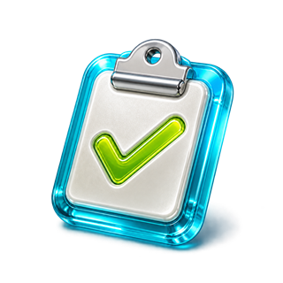
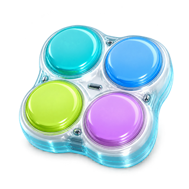

TRAVEL SEASON / 0418°19′N
HAINAN NODE ONLINE
Курс на
ОБЕЩАННОЕ ЗАВТРА
Курс на
Хайнань
28°ЯСНО
ОБЕЩАННОЕ ЗАВТРА
Здесь появятся встречи, выезды и важные точки дня.
Личный контур будет готов, когда мы подключим участников.
Индивидуальный сезонный рейтинг появится после подключения участников.
Только REP — без отдельной системы сезонных очков.
Сейчас экран показывает только будущую композицию.
Полезные расходники и правила экономики определим отдельным этапом.
Новый сезон начнёт новую коллекцию. Утерянная база Beijing не переносится.

MISSION BOARDИвенты и задания появятся после утверждения основного интерфейса.
Первый активный этап — собрать удобный личный контур.

PERSONAL SETTINGSСвязь, справка и настройки устройства будут собраны здесь.